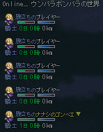

■2011-12-25 (日) 13周年ゲー9[片道勇者]▼
少し進みが遅くなった一週間でしたが、今回も色々実装しています。
今回はゲーム用の一枚も。
クリックで全身図
某キャラの色違いみたいになってますがヒロイン的ポジションの人。
名前はネムリ、薬師をしています。
仲間になると、一定回数だけ傷を治してくれます。
森の中を通ると自動で薬草を集め、回復回数が増えます。
が、年内公開時点で仲間機能が実装されているかどうかは不明です！
久々に自由な実験作なので、色々盛り込んでいます。
とあるウディタ作品で搭載されていたオンライン機能などを参考に、
今回は簡単なオンライン機能の実装にも挑戦しています。
【13周年ゲーム企画 『片道勇者』 今回の実装内容】
・職業別特殊能力を実装し始めました。 → 盾のダメージ減少率2倍や連続攻撃率2倍など。 ・セーブ機能を実装。街のセーブ屋で記憶ができます。 ・セーブアイテムを実装。 → どこでもセーブできるアイテムで、セーブ屋で購入できます（予定）。 ・通信機能を実装 → 同じ世界をプレイしている人の情報が簡易表示されます。  ・元気度を実装。 → 時間が経つと減っていき、スタミナ回復量に影響します。 街で何らかの休息をするか、アイテムで回復できます。 ・弓矢の実装 → 弓を装備し、かつ追加装備として矢を装備していれば発射します。 矢がなければ殴ります。追加装備欄には代わりに盾なども装備できます。 ・重量0のアイテムに乗っただけで自動回収できるようにしました。 → 主に落ちた矢の回収を楽にするための機能です（矢は重さ0）。 重さ1以上のアイテムがあれば取得ウィンドウが表示されます。 ・Shiftでオートターゲットする機能を実装 → Shiftを押すと、自分に隣接したキャラが一体のときだけ、 そのキャラの方向を自動で向くようにしました。 ・ワールド機能を実装 → ワールド名を最大8文字で指定可能です。 同じワールド名にすると、同じ地形や街が出てくるようになります。 ・ワールドの「今日のキャンペーン機能」を実装。 → 毎日キャンペーン中の世界が変化します。 （例：人気の世界・敵が強い世界・仲間が最初の城にいる世界、など） みんなと遊びたい人や、特殊な条件でプレイしたい人は キャンペーン中のワールドに参加することで他の人達の 苦戦っぷりを見ながら一緒に苦しんだり楽しんだりできます。 ・マップ処理を調整 → 長いマップに対応しました。 また、一定距離ごとに地形が変わるようにしました。 地形が変わると、出現モンスターや 街の発生頻度なども変化します（予定） ・スキル機能を追加 → 炎系のスキルで、相手が持ってるアイテムだけでなく、 地面に落ちているアイテムも燃えるようにしました。 爆弾を持った相手に炎を使うと、誘爆させることができます。 （もちろんその逆もあります。火力は諸刃の剣） ・遠距離攻撃スキルを実装 ・範囲攻撃スキルを実装 ・不確定アイテム機能を実装＋識別機能を実装。 → 武器や防具、追加装備は、拾う前は不確定状態になります。 拾うと、知力や職業特性に応じて、一定確率で識別に成功します。 |
予定では機能的には今日の時点でほぼ全部終わってるつもりでしたが、
2日ほどダウンして寝込んでいた分が遅れています。
あとは時間経過によるイベント実行機能（主に魔王出現用）や、
イベント機能の強化、ゲームオーバー処理の実装、
オンライン更新機能の実装で、最低限の機能が実装完了します。
できれば付けたいと思っているのは、プレイ履歴の保存機能や、
歩いた道や履歴を評価してもらえるいつものクリア評価、
武器や防具の特殊能力の合成処理や、
複数の敵がまとまって出てくるグループ敵機能、
仲間機能の実装、チュートリアル仲間の実装などです。
それ以外は、データ面の増加を行い、状況の多様性を増すのがメインです。
同じくランダム性を用いて開発したシルフドラグーンゼロの経験もあって、
ネタやゲーム構成の方面ではあまり不安はありません。
ですが、こういったゲームは、ダメゲーとそうでなくなる境目が
かなりシビアそうだなあというのも感じています。
緊張感と理不尽さの境、各々のプレイヤースキルで面白く楽しめる工夫など
幅広い人が遊べるよう、アイデアを考えていきたいですね。
たぶん今まで作った中では特に、アイデアを頂きながら
徐々に面白くしていけるタイプのゲームだと思うので、
今後の修正にも耐えうるよう、基幹部をしっかり作っていきたいです。
ひとまず自分で遊んで不満のないレベルまで達したら、
年内にリリースするつもりです。お楽しみに！
＞もちろんウリユはでますよね？ サンタコス姿のウリユたん（ﾊｧﾊｧ
ああ、ご期待に添えられなくて残念！
今回は新鮮さマックスにしたいので、新キャラがメインです。
でも代わりに、かわいい妹ポジションの人がでるかもしれません。
＞建物に入ったときの音楽が好きです。ひょっとして魔王城も自動生成？
最初は建物も自動生成にしようと思っていたのですが、
建物を自動生成にすると一定確率で壁の中に拉致されてる魔王様とか
出てきてしまうので、建物に関しては、出来合いのものから
ランダムで選ぶ処理にしています。
＞１３周年おめでとうございま～～～～～す！！！（すべりこみセーフ？？）
＞片道勇者、新年の『初ゲーム』として遊ぶのを楽しみにしています。 .
＞身体、お大事にしてくださいね。 .
ありがとうございます！ 新年には遊べるようがんばりまーす！
23:59時点のコメントですが、拍手コメントで
お祝いしてくださった最初の一名様でした、嬉しい！
2011-12-25 (日)  カテゴリ: 片道勇者
カテゴリ: 片道勇者
 カテゴリ: 片道勇者
カテゴリ: 片道勇者